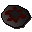

Uncooked pizza
| Config name | uncooked_pizza |
| Item id | 2287 |
| Value | 25 gp |
| Weight | 800g |
| Members | No |
| Tradeable | Yes |
| Stackable | No |
| Defined in | scripts/skill_cooking/configs/cooking_inv/configs/pizza/pizza_uncooked.obj |
Uncooked pizza
This needs cooking.
How to make
| Skill | Level | XP | Ingredients | Tool | How | Where | Makes |
|---|---|---|---|---|---|---|---|
| Cooking | 35 | use on item | 1 |
Used to make
| Skill | Level | XP | Ingredients | Tool | How | Where | Makes |
|---|---|---|---|---|---|---|---|
| Cooking | 35 | 110.0 | use on object | range | can spoil into  Burnt pizza; range only: You need a proper oven to cook that. |
Referenced in scripts
scripts/skill_cooking/scripts/cooking_inv/scripts/pizza/pizza.rs2